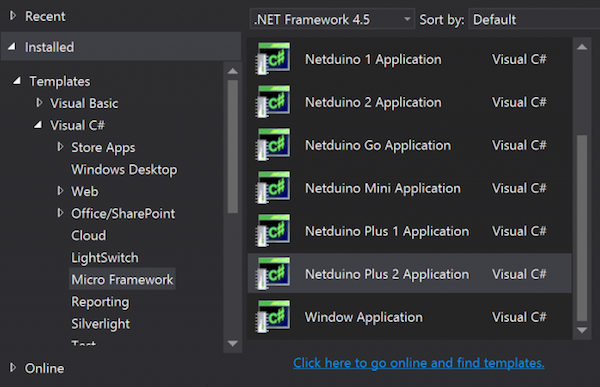
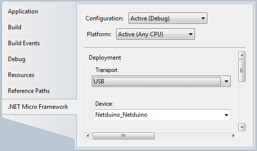

Hardware
To complete this tutorial you need the following components.
| Components | Buy | Price | Quantity |
|---|---|---|---|
| Netduino Plus 2 | Sparkfun | $59.95 | 1 |
| Push button | Component packs | $0.35 | 1 |
| Led | Component packs | $0.35 | 1 |
| 10K Ohm resistor | Resistor kit | $0.25 | 1 |
Control and monitor a connected light from mobile, tablet and desktop using Lelylan & MQTT.
15 minutes | $61 in hardware | entry level

To complete this tutorial you need the following components.
| Components | Buy | Price | Quantity |
|---|---|---|---|
| Netduino Plus 2 | Sparkfun | $59.95 | 1 |
| Push button | Component packs | $0.35 | 1 |
| Led | Component packs | $0.35 | 1 |
| 10K Ohm resistor | Resistor kit | $0.25 | 1 |
To program your Netduino you need to install Visual Studio (the free edition works fine), the .NET Micro Framework (it allows you to write code for the .NET Micro Framework runtime and it also install diagnostics tools), Netduino SDK (it includes projects templates that make it easy to getstarted with Netduino, USB drivers for Netduino, and other Netduino specific tools) and the following libraries.
| Library | Notes |
|---|---|
| M2MQTT | M2Mqtt is a MQTT client available for all .Net platforms (.Net Framework, .Net Compact Framework and .Net Micro Framework) and WinRT platforms (Windows 8.1 and Windows Phone 8.1) for Internet of Things and M2M communication. By Paolo Patierno |
At the end of all these steps in your Visual Studio IDE you'll find a new "Netduino plus 2 Application". Use it to start your project.
This video represents the led, resistor and pushbutton setup. With this setup each time you press the button, the LED is turned on and off.
Open Lelylan Dashboard and create a new device by following 3 simple steps (if you are new to Lelylan, you can sign up for free).

What is a type? A type defines what a device is by defining its properties, functions and statuses. For this tutorial you do not need to now more about.

In this tutorial we'll use MQTT, a publish subscribe protocol for the Internet of Things.

Once the device is created, click the settings link (placed under the device name) and get the device ID and device secret. You'll need them in the next section.


Once the (virtual) device is defined on Lelylan you need to make it communicate with Netduino. Checkout the sample code on Github.

The LelylanCore static class defines the device settings.
The DeviceId and DeviceSecret are used to authenticate
the physical object (Netduino) with Lelylan. To get the device credentials open the
Dashboard, select the
desired device, click on settings and copy the Device ID and the Device Secret.
Lelylan uses MQTT, a publish subscribe protocol for the Internet of Things. To make
Lelylan communicate with Netduino you need to set two topics: one receiving messages
from Lelylan (_inTopic) and one sending messages to Lelylan
(_outTopic). These topics are unique and identified by the device id.
Every message exchanged with Lelylan is made up by a list of properties where each of them
contains the property ID and the property value. For the type "basic light" we only have the
status property with ID 518be5a700045e1521000001 accepting the values
on and off.
Be careful to payload, you have to build a JSON array with the status id of your device (you can find the status id by clicking settings under your Device Name, the clicking on the device type name in "Device details" section.
If you want to know the property IDs of most common types or if you want to create your own types, check out the Types Dashboard or the Types API.
The Program class is the entry point of your application, a static class to invoke your device logic (controller).
In the Controller constructor of this class you need to define a unique identifier for your MQTT client (random string, max 23 bytes). Once you have defined it you can create an instance of your MQTT client.
The RunLightMonitor public method starts the netduino application. After settting an
onboard led reference, the code runs into a loop. In this loop we set the connection with
Lelylan (LelylanConnection), read the led status and publish it on Lelylan when changing.
The public method starts the netduino application. After set an
onboard led reference the code runs into a loop. In this loop we set the connection with
Lelylan (LelylanConnection), read the led status and publish it on Lelylan when changing.
To communicate with Lelylan Netduino needs to initialize the MQTT client connection
to the MQTT server. You have to do it before a connection being active. In LelylanConnection
method you can see the detailed code explanation.
The MqttMsgPublishReceived is the event that receives the requests coming from
Lelylan to apply them to the physical world.
More information about M2MQTT .NET client are available here.
Once you are done ready we can deploy the code into the Netduino board. Make sure that the deployment properties are the same as the picture below and then select Debug -> Start Debugging (or press [F5] button) to run and deploy your sketch into your netduino board.
Access Lelylan Dashboard and control your connected light from mobile, tablet and desktop. If any problem occours, let @lelylan know.

Did you like this tutorial? You could be interested in the following ones.
If you want to learn more check out the Lelylan Dev Center and Lelylan Lab.